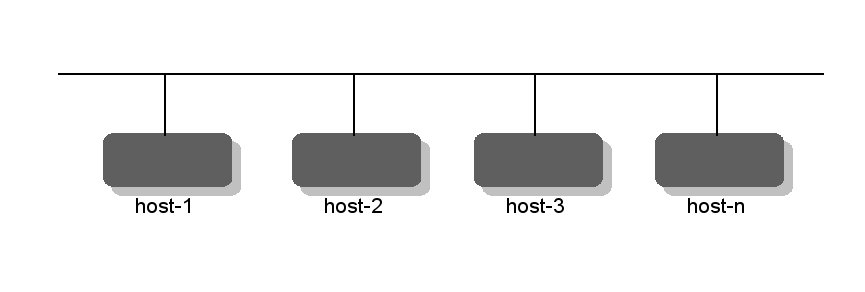

Table of Contents
ConfD supports replication of the CDB configuration as well as of the operational data kept in CDB. The replication architecture is that of one active primary and a number of passive secondaries.
All configuration write operations must occur at the primary and
ConfD
will automatically distribute the configuration updates to the set
of live secondaries. Operational data in CDB may be replicated or not
based on the tailf:persistent statement in the data
model and the ConfD configuration.
All write operations for replicated operational data must also occur
at the primary, with the updates distributed to the live secondaries,
whereas non-replicated operational data can also be written on the
secondaries.
The only thing ConfD does is to replicate the CDB data amongst the members in the HA group. It doesn't perform any of the otherwise High-Availability related tasks such as running election protocols in order to elect a new primary. This is the task of a High-Availability Framework (HAFW) which must be in place. The HAFW must instruct ConfD which nodes are up and down using API functions from confd_lib_ha(3). Thus in order to use ConfD configuration replication we must first have a HAFW.
Replication is supported in several different architectural setups. For example two-node active/standby designs as well as multi-node clusters with runtime software upgrade.
 |
Primary - secondary configuration
In a chassis solution there are (at least two) but a fixed number of management blades. We wish that all configuration data is replicated and if the active dies the standby will takeover and the configuration data is not lost.
|  |
One primary - several secondaries
Furthermore it is assumed that the entire cluster configuration is equal on all hosts in the cluster. This means that node specific configuration must be kept in different node specific subtrees, for example as in Example 27.1, “A data model divided into common and node specific subtrees”.
Example 27.1. A data model divided into common and node specific subtrees
container cfg {
container shared {
leaf dnsserver {
type inet:ipv4-address;
}
leaf defgw {
type inet:ipv4-address;
}
leaf token {
type AESCFB128EncryptedString;
}
...
}
container cluster {
list host {
key ip;
max-elements 8;
leaf ip {
type inet:ipv4-address;
}
...
}
}
}ConfD only replicates the CDB data. ConfD must be told by the HAFW which node should be primary and which nodes should be secondaries.
The HA framework must also detect when nodes fail and instruct ConfD accordingly. If the primary node fails, the HAFW must elect one of the remaining secondaries and appoint it the new primary. The remaining secondaries must also be informed by the HAFW about the new primary situation. ConfD will never take any actions regarding primary/secondary-ness by itself.
ConfD must be instructed through the
confd.conf configuration file that it should
run in HA mode. The following configuration snippet enables HA
mode:
<ha> <enabled>true</enabled> <ip>0.0.0.0</ip> <port>4569</port> <extraIpPorts>:::4569|netns=hans0|vrf=vrf0</extraIpPorts> <tickTimeout>PT20S</tickTimeout> </ha>
The IP address and the port above indicates which IP and
which port should be used for the communication between the HA
nodes. extraIpPorts
is an optional leaf-list
of pipe-separated ip:port pair, network namespace name and VRF interface name
which a HA primary also listens to
for secondary connections. For IPv6 addresses, the syntax [ip]:port may
be used. If the ":port" is omitted, port is used.
The tickTimeout
is a duration indicating how
often each secondary must send a tick message to the primary indicating
liveness. If the primary has not received a tick from a secondary
within 3 times the configured tick time, the secondary is considered
to be dead. Similarly, the primary sends tick messages to all the
secondaries. If a secondary has not received any tick messages from the
primary within the 3 times the timeout, the secondary will consider the
primary dead and report accordingly.
A HA node can be in one of three states:
NONE, SLAVE (secondary) or
MASTER (primary). Initially a node is in the
NONE state. This implies that the node
will read its configuration from CDB, stored locally on file.
Once the HA framework has decided whether the node should be a
secondary or a primary the HAFW must invoke either the
function
confd_ha_beslave(master) or
confd_ha_bemaster().
When a ConfD HA node starts, it always starts up in mode
NONE. This is consistent with how ConfD works
without HA enabled. At this point there are no other nodes
connected. Each ConfD node reads its configuration
data from the locally stored CDB and applications on or off the
node may connect to ConfD and read the data they need.
At some point, the HAFW will command some nodes to become secondary nodes of a named primary node. When this happens, each secondary node tracks changes and (logically or physically) copies all the data from the primary. Previous data at the secondary node is overwritten.
Note that the HAFW, by using ConfD's start phases, can make
sure that ConfD does not start its northbound interfaces (NETCONF,
CLI, ...) until the HAFW has decided what type of node it
is. Furthermore once a node has been set to the SLAVE state,
it is not possible to initiate new write transactions towards the node.
It is thus never possible for an agent to write directly into a
secondary node.
Once a node is returned either to the NONE state or to
the MASTER state, write transactions can once again be initiated
towards the node.
The HAFW may command a secondary node to become primary at any time. The secondary node already has up-to-date data, so it simply stops receiving updates from the previous primary. Presumably, the HAFW also commands the primary node to become a secondary node, or takes it down or handles the situation somehow. If it has crashed, the HAFW tells the secondary to become primary, restarts the necessary services on the previous primary node and gives it an appropriate role, such as secondary. This is outside the scope of ConfD.
Each of the primary and secondary nodes have the same set of all callpoints and validation points locally on each node. The start sequence has to make sure the corresponding daemons are started before the HAFW starts directing secondary nodes to the primary, and before replication starts. The associated callbacks will however only be executed at the primary. If e.g. the validation executing at the primary needs to read data which is not stored in the configuration and only available on another node, the validation code must perform any needed RPC calls.
If the order from the HAFW is to become primary, the node
will start to listen for incoming secondaries at the ip:port
configured under /confdCfg/ha. The secondaries TCP connect
to the primary and this socket is used by ConfD to distribute the
replicated data.
If the order is to be a secondary, the node will contact the primary and possibly copy the entire configuration from the primary. This copy is not performed if the primary and secondary decide that they have the same version of the CDB database loaded, in which case nothing needs to be copied. This mechanism is implemented by use of a unique token, the "transaction id" - it contains the node id of the node that generated it and and a time stamp, but is effectively "opaque".
This transaction id is generated by the cluster primary each time a configuration change is committed, and all nodes write the same transaction id into their copy of the committed configuration. If the primary dies, and one of the remaining secondaries is appointed new primary, the other secondaries must be told to connect to the new primary. They will compare their last transaction id to the one from the newly appointed primary. If they are the same, no CDB copy occurs. This will be the case unless a configuration change has sneaked in, since both the new primary and the remaining secondaries will still have the last transaction id generated by the old primary - the new primary will not generate a new transaction id until a new configuration change is committed. The same mechanism works if a secondary node is simply restarted. In fact no cluster reconfiguration will lead to a CDB copy unless the configuration has been changed in between.
Northbound agents should run on the primary, it is not possible for an agent to commit write operations at a secondary node.
When an agent commits its CDB data, CDB will stream the committed data out to all registered secondaries. If a secondary dies during the commit, nothing will happen, the commit will succeed anyway. When and if the secondary reconnects to the cluster, the secondary will have to copy the entire configuration. All data on the HA sockets between ConfD nodes only go in the direction from the primary to the secondaries. A secondary which isn't reading its data will eventually lead to a situation with full TCP buffers at the primary. In principle it is the responsibility of HAFW to discover this situation and notify the primary ConfD about the hanging secondary. However if 3 times the tick timeout is exceeded, ConfD will itself consider the node dead and notify the HAFW. The default value for tick timeout is 20 seconds.
The primary node holds the active copy of the entire configuration data in CDB. All configuration data has to be stored in CDB for replication to work. At a secondary node, any request to read will be serviced while write requests will be refused. Thus, CDB subscription code works the same regardless of whether the CDB client is running at the primary or at any of the secondaries. Once a secondary has received the updates associated to a commit at the primary, all CDB subscribers at the secondary will be duly notified about any changes using the normal CDB subscription mechanism.
We specify in confd.conf which IP
address the primary should bind for incoming secondaries. If we choose
the default value 0.0.0.0 it is the responsibility of
the application to ensure that connection requests only arrive
from acceptable trusted sources through some means of
firewalling.
A cluster is also protected by a token, a secret string only
known to the application. The API function
confd_ha_connect()
must be given the token.
A secondary node that connects to a primary node negotiates with the
primary using a CHAP-2 like protocol, thus both the primary and the
secondary are ensured that the other end has the same token without
ever revealing their own token. The token is never sent in clear
text over the network. This mechanism ensures that a connection
from a ConfD secondary to a primary can only succeed if they both have
the same token.
It is indeed possible to store the token itself in CDB, thus
an application can initially read the token from the local CDB
data, and then use that token in
confd_ha_connect().
In this case it may very
well be a good idea to have the token stored in CDB be of type
tailf:aes-256-cfb-128-encrypted-string.
If the actual CDB data that is sent on the wire between cluster nodes is sensitive, and the network is untrusted, the recommendation is to use IPSec between the nodes. An alternative option is to decide exactly which configuration data is sensitive and then use the tailf:aes-256-cfb-128-encrypted-string type for that data. If the configuration data is of type tailf:aes-256-cfb-128-encrypted-string the encrypted data will be sent on the wire in update messages from the primary to the secondaries.
There are two APIs used by the HA framework to control the replication aspects of CDB. First there exists a synchronous API used to tell ConfD what to do, secondly the application may create a notifications socket and subscribe to HA related events where ConfD notifies the application on certain HA related events such as the loss of the primary etc. This notifications API is described in confd_lib_events(3). The HA related notifications sent by ConfD are crucial to how to program the HA framework.
The following functions are used from the HAFW to instruct ConfD about the cluster.
-
int confd_ha_connect(int sock, const struct sockaddr* srv, int srv_sz, const char *token ); Connects a HA socket to ConfD and also provides the secret token to be used in later negotiations with other nodes.
-
int confd_ha_bemaster(int sock, confd_value_t *mynodeid ); Instructs the local node to become primary. The function also provides a node identifier for the node. The node id is of type confd_value_t. Thus if we in our configuration have trees with different branches for node local data, it is highly recommended to use the same type there as for the type of the node id.
-
int confd_ha_beslave(int sock, confd_value_t *mynodeid, struct confd_ha_node *master, int waitreply ); Instructs a node to be secondary. The definition of the struct confd_ha_node is:
struct confd_ha_node { confd_value_t nodeid; int af; /* AF_INET | AF_INET6 | AF_UNSPEC */ union { /* address of remote note */ struct in_addr ip4; struct in6_addr ip6; char *str; } addr; char buf[128]; /* when confd_read_notification() and */ /* confd_ha_get_status() populate these structs, */ /* if type of nodeid is C_BUF, the pointer */ /* will be set to point into this buffer */ char addr_buf[128]; /* similar to the above, but for the address */ /* of remote node when using external IPC */ /* (from getpeeraddr() callback for slaves) */ };-
int confd_ha_benone(int sock ); Resets a node to the initial state.
-
int confd_ha_berelay(int sock ); Instructs a secondary node to be a relay for other secondaries. This is discussed in Section 27.8, “Relay secondaries”.
-
int confd_ha_get_status(int sock, struct confd_ha_status *stat ); Returns the status of the current node in the user provided struct confd_ha_status structure. The definition is:
struct confd_ha_status { enum confd_ha_status_state state; /* if state is MASTER, we also have a list of slaves */ /* if state is SLAVE, then nodes[0] contains the master */ /* if state is RELAY_SLAVE, then nodes[0] contains the master, and following entries contain the "sub-slaves" */ /* if state is NONE, we have no nodes at all */ struct confd_ha_node nodes[255]; int num_nodes; };-
int confd_ha_slave_dead(int sock, confd_value_t *nodeid ); This function must be used by the HAFW to tell ConfD that a secondary node is dead. It is vital that this is indeed executed. ConfD will notice that a secondary is dead automatically if the socket to the secondary is closed, however the secondary can die without closing its socket. If configured, ConfD will periodically send alive tick messages from the secondaries to the primary. If a tick message isn't received by the primary within the pre configured time the primary will consider the secondary dead, close the socket and report to the application through a notifications socket.
The configuration parameter
/confdCfg/ha/tickTimeout is by default set to 20
seconds. This means that every 20 seconds each secondary will send a
tick message on the socket leading to the primary. Similarly, the
primary will send a tick message every 20 seconds on every secondary
socket.
This aliveness detection mechanism is necessary for ConfD.
If a socket gets closed all is well, ConfD will cleanup and notify
the application accordingly using the notifications API. However,
if a remote node freezes, the socket will not get properly closed
at the other end. ConfD will distribute update data from the
primary to the secondaries. If a remote node is not reading the data,
TCP buffer will get full and ConfD will have to start to buffer
the data. ConfD will buffer data for at most tickTime
times 3 time units. If a tick has not been received
from a remote node within that time, the node will be considered
dead. ConfD will report accordingly over the notifications socket
and either remove the hanging secondary or, if it is a secondary that
loose contact with the primary, go into the initial NONE
state.
If the HAFW can be really trusted, it is possible to set
this timeout to PT0S, i.e zero, in which case
the entire dead-node-detection mechanism in ConfD is
disabled.
Some applications consist of several machines and also have an architecture where it is possible to dynamically add more machines to the cluster. The procedure to add a machine to the cluster is called “joining the cluster”.
Assume a situation where the cluster is running, we know
that the primary is running at IP address primary_ip. A
common technique is to bring up a virtual IP address (VIP) on the
primary and then use gratuitous ARP to inform the other hosts on
the same L2 network about the new MAC/IP mapping.
The code to join a cluster is always going to be application specific. Typically we would do something like the following:
Start the new machine with an initial simple CLI which gathers the following information from the user or from the network.
The VIP. We need to know where the primary is. This can be entered manually. Another technique would be to use UDP broadcast at the new machine and let code running at the primary reply. Regardless, we need an IP address to connect to.
The admin password.
Connect to a server at the VIP and send the admin password. This server code must then:
Use
maapi_authenticate()to check that the remote user indeed knows the admin password (or whichever user we choose in our application).Assume a data model similar to the one in Example 27.1, “A data model divided into common and node specific subtrees”. The server code running at the primary would then use MAAPI to populate the new
/cfg/cluster/hosttree for the joining secondary. Finally the primary code replies with the secret cluster token found in the primary config at/cfg/shared/token. It is not necessary to have the token in CDB, it could also be stored somewhere else or even hard coded if the network for cluster communication is considered trusted.The join code at the new machine now has the token. It can start ConfD with its default configuration. Once ConfD is started the join code invokes
confd_ha_beslave()and we are done.
The normal setup of a ConfD HA cluster is to have all secondaries connected directly to the primary. This is a configuration that is both conceptually simple and reasonably straightforward to manage for the HAFW. In some scenarios, in particular a cluster with multiple secondaries at a location that is network-wise distant from the primary, it can however be sub-optimal, since the replicated data will be sent to each remote secondary individually over a potentially low-bandwidth network connection.
To make this case more efficient, we can instruct a secondary to
be a relay for other secondaries, by invoking the confd_ha_berelay() API
function.
This will make the secondary start listening on the IP address and port
configured for HA in confd.conf, and handle connections
from other secondaries in the same manner as the cluster primary does. The
initial CDB copy (if needed) to a new secondary will be done from the
relay secondary, and when the relay secondary receives CDB data for
replication from its primary, it will distribute the data to all its
connected secondaries in addition to updating its own CDB copy.
To instruct a node to become a secondary connected to a relay
secondary, we use the
confd_ha_beslave() function as
usual, but pass the node information for the relay secondary instead of
the node information for the primary. I.e. the "sub-secondary" will in
effect consider the relay secondary as its primary. To instruct a relay
secondary to stop being a relay, we can invoke the confd_ha_beslave()
function with the same parameters as in the original
call. This is a no-op for a "normal" secondary, but it will cause a
relay secondary to stop listening for secondary connections, and disconnect
any already connected "sub-secondaries".
This setup requires special consideration by the HAFW. Instead of just telling each secondary to connect to the primary independently, it must setup the secondaries that are intended to be relays, and tell them to become relays, before telling the "sub-secondaries" to connect to the relay secondaries. Consider the case of a primary M and a secondary S0 in one location, and two secondaries S1 and S2 in a remote location, where we want S1 to act as relay for S2. The setup of the cluster then needs to follow this procedure:
Tell M to be primary.
Tell S0 and S1 to be secondary with M as primary.
Tell S1 to be relay.
Tell S2 to be secondary with S1 as primary.
Conversely, the handling of network outages and node failures
must also take the relay secondary setup into account. For example, if a
relay secondary loses contact with its primary, it will transition to the
NONE state just like any other secondary, and it will then
disconnect its "sub-secondaries" which will cause those to transition to
NONE too, since they lost contact with "their" primary. Or
if a relay secondary dies in a way that is detected by its
"sub-secondaries",
they will also transition to NONE. Thus in the example
above, S1 and S2 needs to be handled differently. E.g. if S2 dies,
the HAFW probably won't take any action, but if S1 dies, it makes
sense to instruct S2 to be a secondary of M instead (and when S1 comes
back, perhaps tell S2 to be a relay and S1 to be a secondary of
S2).
Besides the use of confd_ha_berelay(), the API is mostly
unchanged when using relay secondaries. The HA event notifications
reporting the arrival or the death of a secondary are still generated
only by the "real" cluster primary. If the confd_ha_get_status() API
function
is used towards a relay secondary, it will report the node state as
CONFD_HA_STATE_SLAVE_RELAY rather than
just CONFD_HA_STATE_SLAVE, and the
array of nodes will have its primary as the first element (same as
for a "normal" secondary), followed by its "sub-secondaries"
(if any).
When HA is enabled in confd.conf CDB
automatically replicates data written on the primary to the
connected secondary nodes. Replication is done on a per-transaction
basis to all the secondaries in parallel. It can be configured to be
done asynchronously (best performance) or synchronously in step
with the transaction (most secure). When ConfD is in secondary mode
the northbound APIs are in read-only mode, that is the
configuration can not be changed on a secondary other than through
replication updates from the primary. It is still possible to read
from for example NETCONF or CLI (if they are enabled) on a
secondary. CDB subscriptions works as usual.
When ConfD is in the NONE
state CDB is unlocked and it behaves as when ConfD is not in HA
mode at all.
The Section 9.8, “Operational data in CDB” describes how
operational data can be stored in CDB. If this is used it is also
possible to replicate operational data in HA mode. Since
replication comes at a cost ConfD makes it configurable whether to
replicate all operational data, or just the persistent data (the
default). See the
confd.conf(5)
man-page
for the /confdConfig/cdb/operational/replication
configurable. Replication of operational data can also be configured
to be done asynchronously or synchronously, via the
/confdConfig/cdb/operational/replicationMode
configurable, but since there are no transactions for the writing of
operational data, this pertains to a given API call writing
operational data.